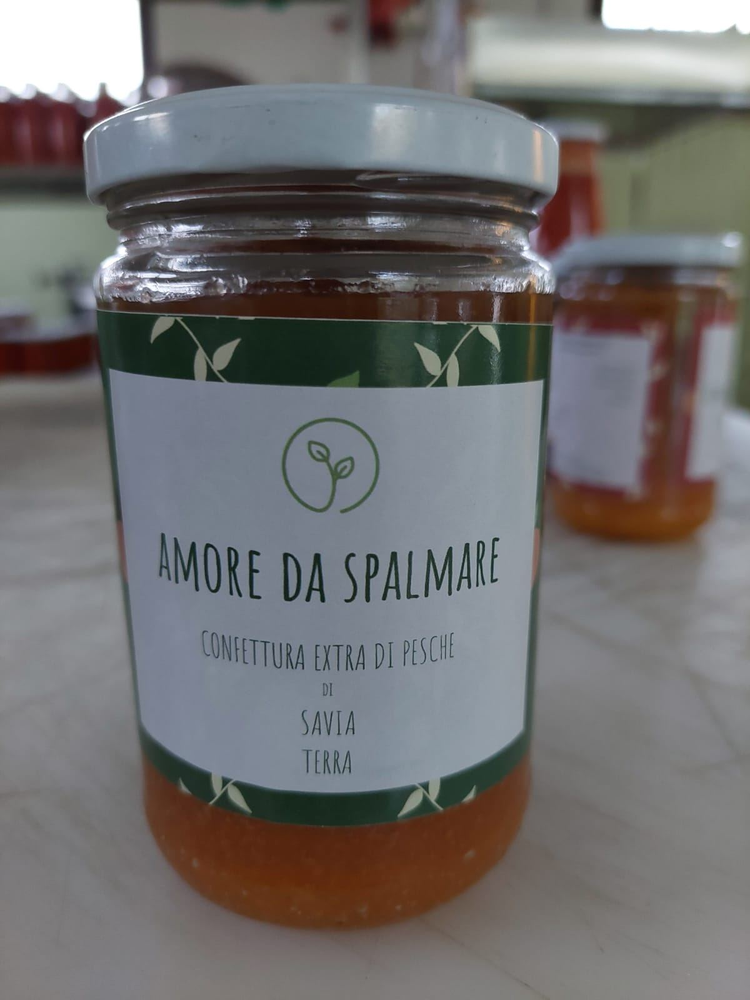
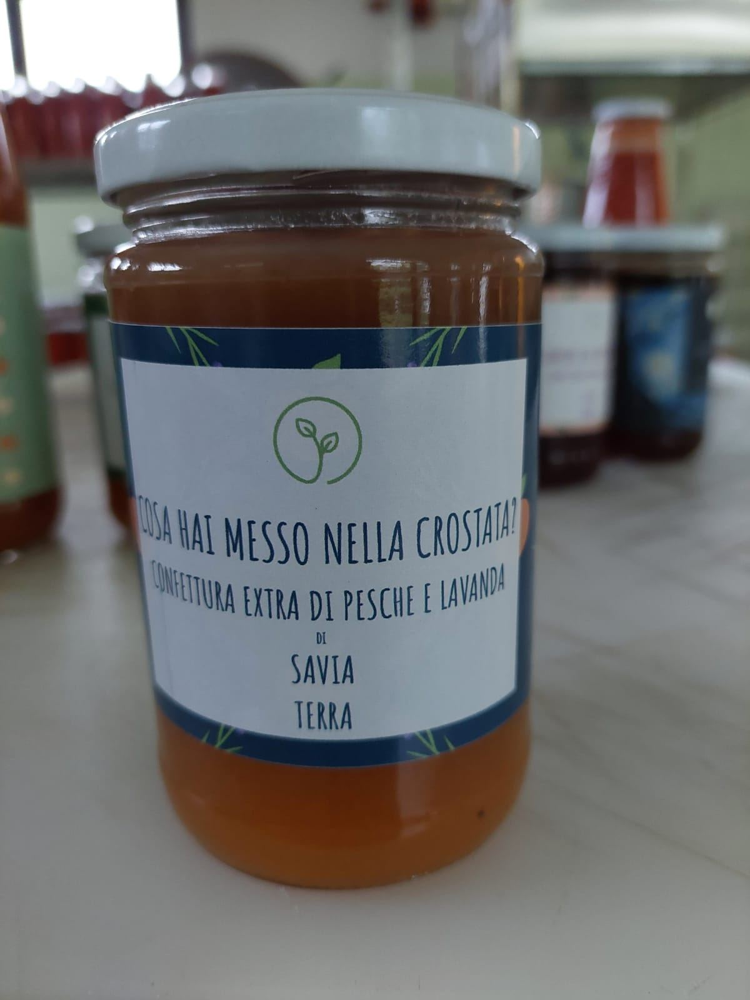
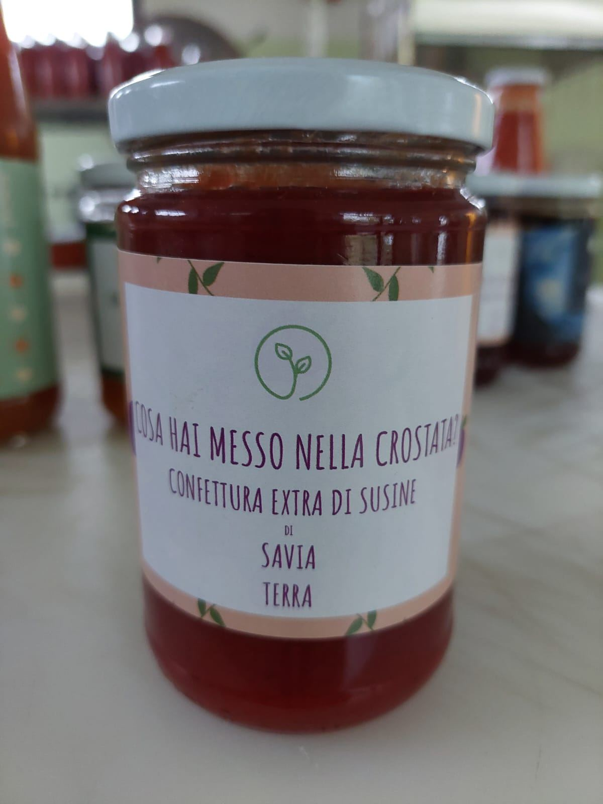
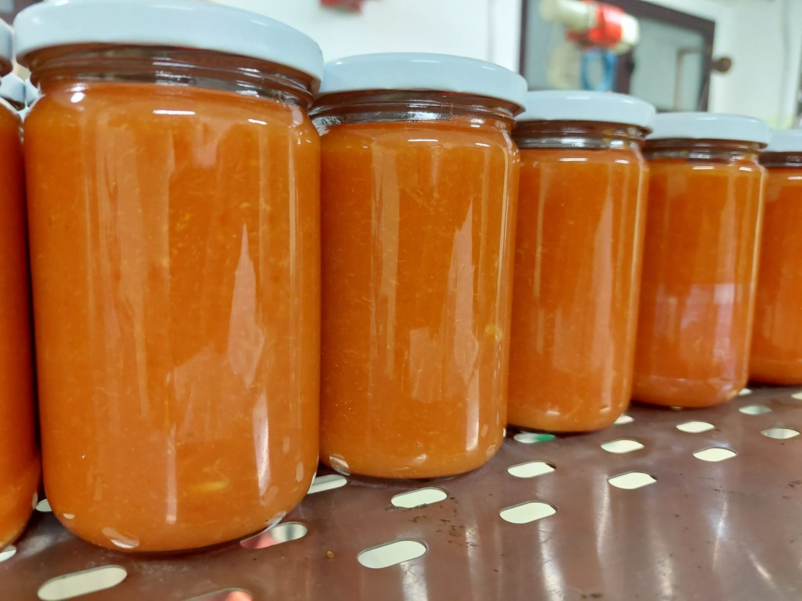
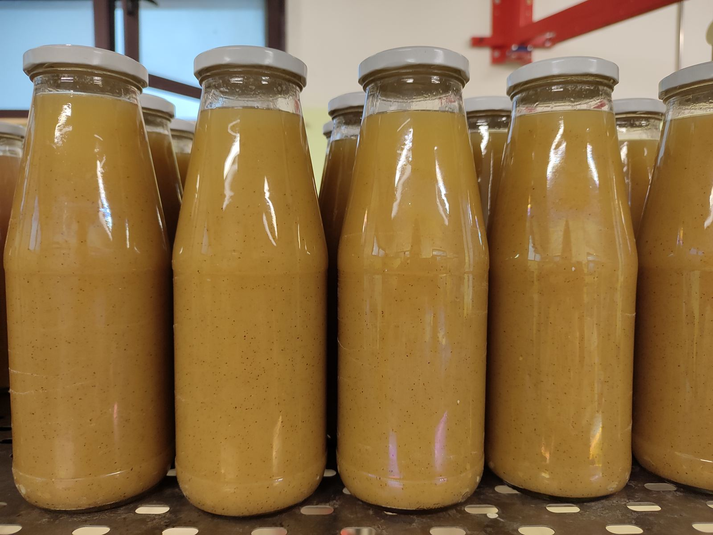
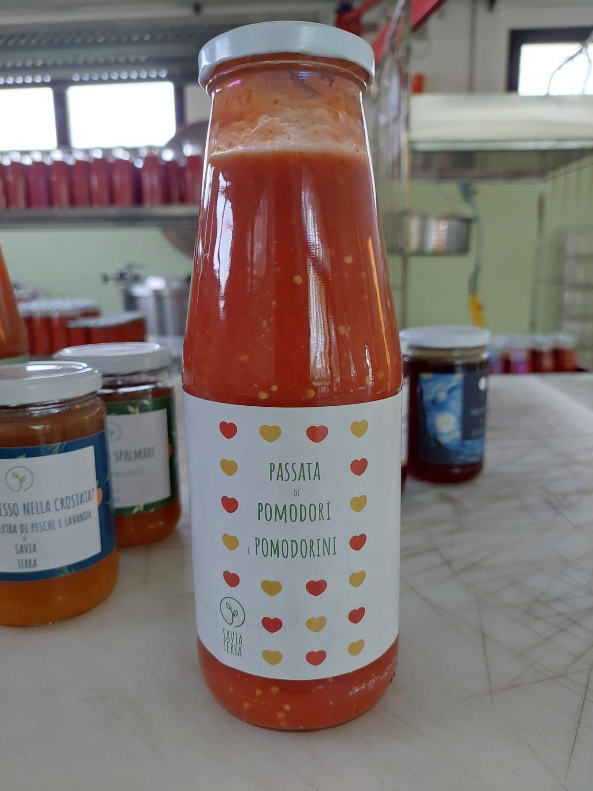
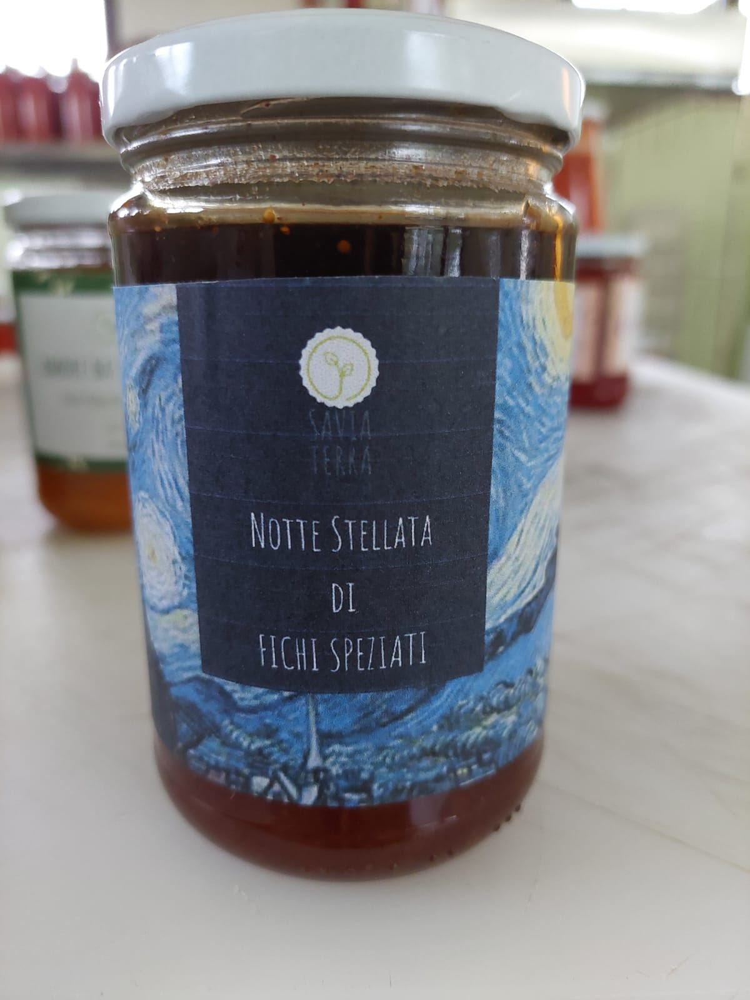
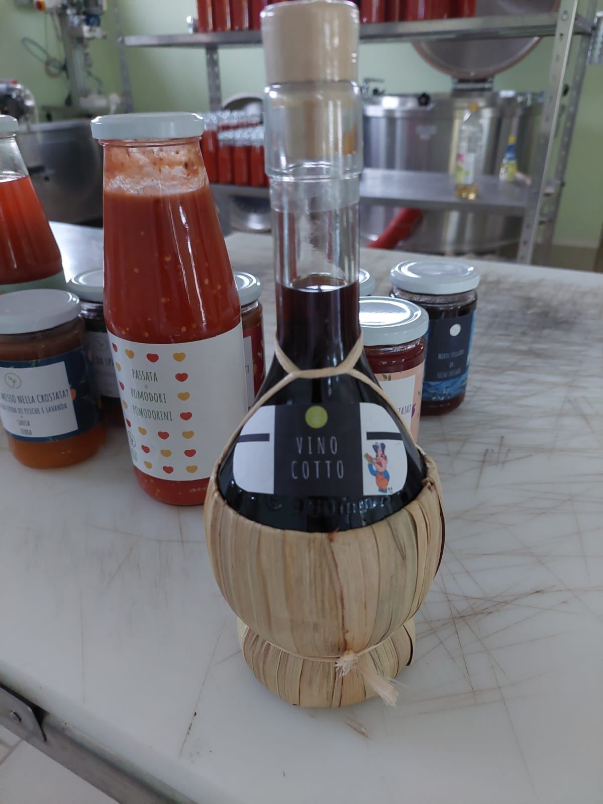

314 ml
Confetture di pesca
Diverse varietà di pesche, ognuna con il suo colore e la sua consistenza. C'è anche la pesca a pezzi, ideale su yogurt o gelato.
Confetture, nettari e passate fatti con la frutta e gli ortaggi che coltiviamo noi. Niente conservanti, coloranti o addensanti.
Ogni vasetto è diverso: colore e consistenza cambiano con la varietà del frutto e con il suo grado di maturazione in pianta. Per questo i nostri prodotti hanno un sapore intenso, lontano dalle standardizzazioni industriali.

Diverse varietà di pesche, ognuna con il suo colore e la sua consistenza. C'è anche la pesca a pezzi, ideale su yogurt o gelato.

Il profumo della lavanda incontra la dolcezza delle nostre pesche. Perfetta nella crostata.

Frutta raccolta matura e cotta in sottovuoto a temperatura controllata, senza pectina.

Arance lavorate con solo limone, niente acido citrico. Se la parte alta scurisce non c'è problema: è il segno di un prodotto naturale.

Il colore lo decide la frutta: dall'arancione della nettarina al rosato della pesca a polpa bianca.

Tante varietà insieme per un gusto e una consistenza ideali: San Marzano, Cuore Albenga, Cuore di bue, datterino rosso e giallo, ciliegino giallo, rosso e nero, Vesuviano (Piccadilly), costoluto. Pomodori lavati, sbucciati e cotti in sottovuoto.

La nostra "Notte stellata": fichi lavorati con le spezie, con la stessa cura artigianale di tutte le nostre conserve.

Un vino cotto invecchiato cinquant'anni. Accanto al vigneto abbiamo una cantina dove produciamo vino con le nostre uve.
Oltre alle conserve vendiamo anche frutta di stagione, ortaggi e vino.
Ordina su WhatsAppLe curiosità che ci chiedete più spesso sulle nostre conserve.
Il colore dipende solo dalla polpa del frutto, perché non aggiungiamo coloranti né conservanti. Una pesca nettarina con la buccia dà un prodotto arancione scuro, una percoca vasetti giallo brillante, una pesca a polpa rossa una confettura molto scura e una a polpa bianca un colore rosato. Anche la maturazione al momento della raccolta cambia colore e consistenza.
Lavoriamo prodotti 100% naturali e aggiungiamo solo limone, non acido citrico. Nelle confetture chiare, come quelle di pesca gialla o di arancia, la parte superiore può scurire. Nessun problema: il prodotto è pastorizzato e messo sottovuoto e mantiene tutte le sue proprietà.
Non usiamo addensanti né pectina. La frutta si concentra con una cottura in sottovuoto a temperatura controllata: così le proprietà organolettiche restano invariate e il prodotto non risulta artificiale al gusto né gelatinoso nella consistenza.
Chi più ne ha più ne metta! Ogni varietà ha qualcosa da dare: c'è chi è più dolce, chi più ricco di vitamine, chi più polposo o colorato. Unendole otteniamo una passata ricca di sapore.
Tutta la frutta che lavoriamo è coltivata da noi. La lasciamo maturare sull'albero, così da ridurre al minimo gli zuccheri aggiunti, e la lavoriamo subito dopo la raccolta, senza passaggi in frigorifero.
Una confettura, una passata o un nettare chiusi si conservano per oltre due anni dalla produzione.